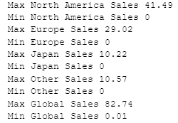
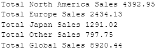
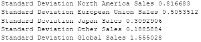

The Videogame Market
August 2023
Background:
The videogame market has grown over the years dating back to the late 1900s (from the dataset) and is expected to compound grow for the coming years. The dataset ranges globally and include various genres and gaming platforms.
Goal:
Find trends and patterns from historical data about the videogame market up to the year 2017. Understand why the videogame industry is thriving and will continue to flourish.
Analytics Business Task:
Analyze the sale performances based on year, brand, region, and genre to gain insights on historical videogame market.
Limitations:
To enhance the depth of the data analysis, additiontional information about videogame prices and its associated profits can unlock more patterns that the current data may not display. Furthermore, missing data was discovered and was dealt with by inputting data found through research and carefully removing entries that was not relevant (265 out of 16,598 entries deleted).
Results/Suggestions:
With continous advancements in technology, it is undeniable that videogame industry will progress in the coming years with more advanced graphics, user experience, and new ways to keep players entertained. The supply and demand for videogames has been on the raise since the late 1900s and is predicted to continue based on the analysis below. Action games have the most sales out of 12 different genres due to the balance between challenges and room for progression that players seem to be invested in with their time and money. Multiplayer games (includes most of the top videogame genres), have higher sales as players invite others and foster more interactions. As videogames become more culturally accepted and proceeds to improve, the industry is destined for a tremendous growth. Companies in the industry and new creators must be viligant in market changes and trends.
Sources:
Data SourceBackground on the Videogame Market
Statistics
Max and Min Sales (Millions)
Total Sales (Millions)
Average Sales (Millions)

Standard Deviation for Sales (Millions)
Which genre has been produced the most?

Observations:
- Action video games was most produced between the years 1975 and 2017.
- High demand for action games.
- Why are action games produced the most?
- The difficulty and competitiveness of the game may persuade the player to make in-game purchases.
- The more money the game makes, the more likely the company will produce more action games.
- Least produced genre are puzzle games.
Which genre has the most sales?

Observations:
- Action has the most global sales between 1975 to 2017.
- Why are action games so popular?
- Action games are challenging and require the player to stay invested to advance.
- Sports has the second most global sales despite the fact that Wii Sports video game has the most individual sales.
- Strategy has the lowest global sales.
Which videogaming platform had the most games produced?

Observations:
- Nintendo DS and Playstation produced the most games.
- Why did Nintendo DS and Playstation produce the most games?
- Nintendo DS and a Playstation 2 are the most used platforms.
Which videogaming platform had the most games sold?

Observations:
- The Playstation 2 had the most number of global sales.
- Why did the Playstation 2 have the highest number of sales globally?
- It was successful due to its support of DVD players at the time it was released, when DVD players were expensive.
- It was one of the cheapest DVD players, while also allowing users to play games. [Source]
- The video game platforms with the highest amount of sales will continue to be at the top since most game developers will want to host their games on the most used platforms.
Which regions have sold the most videogames?

Observations:
- North America (NA) make up half of videogame sales.
- North America (NA) has the highest population in comparison to the other regions, based off 2021 data.
How much videogames had been sold over the years? (Till 2017)
Observations:
- Number of video game sales over the years have increased.
- The video game with the highest number of sales is Wii Sports.
- Game development has improved overtime which is a huge effect on the trend.
- Video games are a social game which means that users will constantly market it intentionally or unintentionally to their friends.